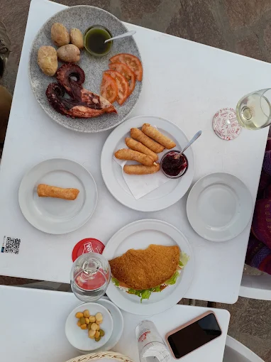
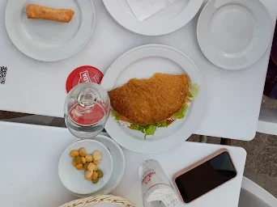
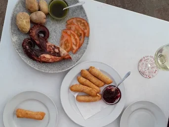
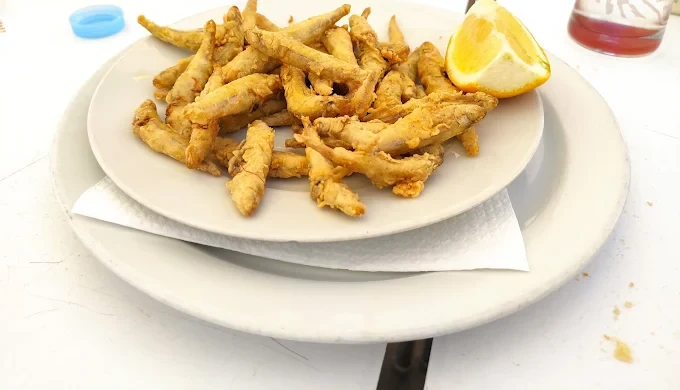
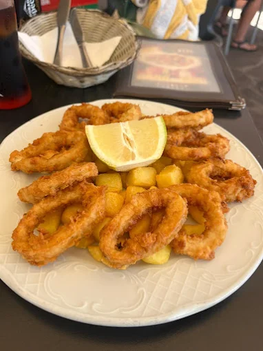
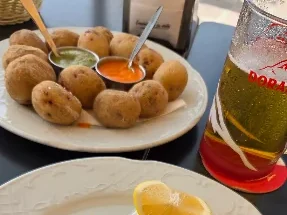
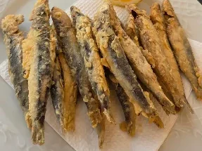

Cocina venezolanacon sabor a mar canario
Arepas, cachapas y tequeños recién hechos junto al pescado del día y las papas arrugadas con mojo. En El Puertito de Güímar, a un paso del agua.

Cocina venezolana y canariafrente al Atlántico
Cara-Ven es un bar restaurante de El Puertito de Güímar, a pocos metros del muelle y de la piscina natural. Cocina venezolana de casa —arepas, cachapas, tequeños, pabellón— junto al pescado fresco, las papas arrugadas y los mojos de toda la vida.
Raciones pensadas para compartir, terraza al aire libre y precios claros con I.G.I.C. incluido. Sin prisa, como se come aquí.
- Cocina venezolana y canaria
- Pescado y marisco del día
- Terraza junto al mar
- Raciones para compartir
Nuestrasespecialidades

Arepas, Cachapas y Tequeños
La cocina venezolana de casa: masa recién hecha, rellenos generosos y ese punto crujiente que engancha.

Pulpo y Mariscos
Pulpo guisado o a la vinagreta, lapas con mojo, mejillones y langostinos hechos al momento.

Fritura del Día
Gueldes, chopitos y churros de pescado — la fritura canaria de siempre, servida bien caliente.

Calamares a la Romana
Anillas rebozadas en el momento, con papas y un golpe de limón.

Papas Arrugadas con Mojo
Papa canaria con sal gruesa y los dos mojos, verde y picón, hechos en casa.

Pescado Fresco
Sardinas, atún a la plancha, chocos asados y bacalao encebollado.
42 platos,precios claros
Toda la carta del restaurante, en cuatro idiomas y con los precios de ración. Media ración disponible en casi todos los platos: pregunta al personal.
La mesay el mar


Te esperamosen El Puertito
Llámanos para reservar mesa o escríbenos por WhatsApp. Abrimos todos los días menos el jueves.
-
Teléfono696 27 41 90
-
HorarioLunes10:30–21:30 Martes10:30–21:30 Miércoles10:30–21:30 JuevesCerrado Viernes10:30–21:30 Sábado10:30–21:30 Domingo10:30–21:30
¿Vienes en grupo?
Para mesas grandes o encargos como la paella, avísanos con antelación y lo dejamos todo preparado.